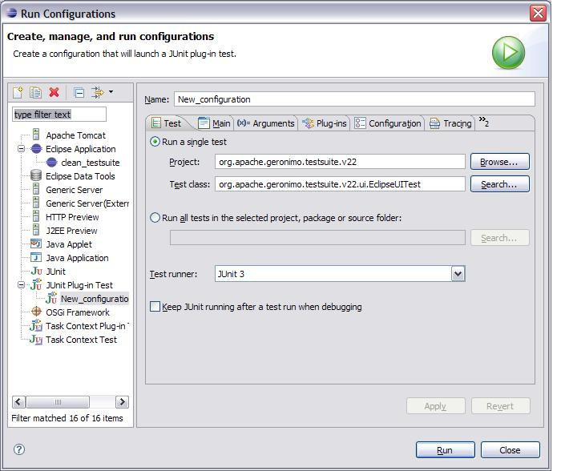

总览
GEP的自动测试是在Maven构建期间执行的。这些测试作为JUnit 3插件测试运行，并使用Abbot和Abbot for SWT （两个开源项目）执行GUI测试，以查找对象，测试对象和驱动对象。
通过Maven构建和运行
如果要构建整个GEP，则测试套件将是最后构建的模块。作为正常构建过程的一部分，Maven将执行以下记录和所示的几个步骤：
- 从Maven调用Ant来下载Eclipse，Eclipse测试框架和Abbot SWT jar。这些工件已解压缩，以为Equinox启动器创建Eclipse安装。将在调用测试套件之前构建的常规GEP插件复制到该安装中。这次新的Eclipse安装将位于测试套件的启动器子目录中。
- Maven用于下载要在测试套件期间测试的Geronimo服务器。由于GEP通常支持Geronimo服务器的多个版本，因此支持多个服务器。服务器也安装在启动器子目录中。
- 所有测试套件Eclipse插件都是使用maven构建的，然后将其复制到测试套件Eclipse安装中的适当位置。每个插件必须包含一个ant脚本（即test.xml），并包含在testsuite.xml文件中，以便可以正确调用它。
- 最后，maven使用Equinox启动器使用ant调用Eclipse。对于每个testsuite插件，都会通过插件的test.xml文件调用ant。

该测试套件必须在常规插件构建后运行，因为它将测试插件代码。默认情况下不会调用测试套件。要调用它，请使用“ mvn install -Ptestsuite ”。
将测试套件导入Eclipse
从sourceforge.net下载以下用于SWT jar的Abbot ，并将其放在eclipse插件目录中：
- abbot.swt.jar
- abbot.swt.test.jar
- abbot.swt.eclipse.jar
我在abbot.swt-0.1.0.20080305_1254.zip中找到了这些jar，可从http://sourceforge.net/projects/abbot/files/中的abbot.swt中找到，位于0.1.0.20080305_1254下。
之后，您应该能够导入org.apache.geronimo.testsuite.v21项目。
手动运行测试套件
如果要创建或更新测试用例，那么从Eclipse中运行测试用例比使用Maven更快。打开“运行配置”对话框，然后执行以下操作：
- 创建一个新的JUnit插件测试
- 测试页。将Test Runner更改为JUnit 3。
- 测试页。将项目更改为org.apache.geronimo.testsuite.v22。
- 测试页。将测试类更改为org.apache.geronimo.testsuite.v22.ui。EclipseUITest。
- 参数页面。将VM参数设置为-Xms256m -Xmx256m -XX：MaxPermSize = 128m
- 主页。选择运行产品，然后选择org.eclipse.platform.ide
- 主页。找到该版本在启动器中的安装位置，并将工作空间位置指向在mvn安装过程中创建的eclipse / eclipse / plugins目录。将工作空间（在主选项卡上）设置为类似于C：\ g \ devtools \ eclipse-plugin \ trunk \ testsuite \ launcher \ eclipse \ eclipse \ jdt_folder


添加测试用例
将新的测试用例添加到GEP测试套件时，需要执行以下步骤。请注意，每个新测试用例都使用org.apache.geronimo.testsuite.v22.testCases扩展点。
- 创建一个扩展org.apache.geronimo.testsuite.v22.ui的类。AbstractTestCase并实现buildTestCase（），runTestCase（），cleanupTestCase（）方法。每个测试用例都应使服务器和工作空间处于与启动时相同的状态。
- AbstractTestCase具有几个字段，这些字段提供了用于测试用例实现的有用方法。
workbenchShell-简单的Eclipse框架及其所有GUI组件
abbotHelper -Abbot的包装。使用它可以使GUI执行操作。
serverTasks-执行可以在Geronimo服务器上执行的几种常规操作，包括显示服务器概述页面和发布项目。
projectTasks-执行可以对项目执行的常规操作，包括创建和删除。
workbenchTasks-执行可以在Eclipse中执行的常规操作，包括打开内部浏览器和更改视角。 - 更新plugin.xml以使用org.apache.geronimo.testsuite.v22.testCases扩展点。扩展点的类是上面创建的类。
- 当测试套件正在运行时，实际上有两个Eclipse实例正在运行。第一个实例将使用testsuite \ launcher \ workspace作为其工作空间，而第二个实例（由JUnit测试用例使用）将利用testsuite \ eclipse \ eclipse \ jdt_folder目录作为其工作空间。
- JUnit将调用EclipseUITest类。此类是测试套件的主要驱动程序。它将执行快速验证测试，以验证是否已安装Geronimo并启动服务器。接下来，它将遍历所有测试用例扩展，依次运行每个扩展。完成所有测试用例后，将卸载Geronimo服务器并关闭Eclipse。
- 最后，新的测试用例必须在没有Maven构建错误的情况下进行构建和执行。在构建之后，它必须导入Eclipse并在Eclipse中执行且没有错误。
方丈编码
为了使测试用例编码更容易，创建了一个AbbotHelper类。AbbotHelper充当API调用的包装器，并执行许多最常用的GUI功能，单击菜单，输入文本，按按钮等。新功能可以轻松添加到此类中。大多数Abbot功能都遵循以下模板：
- 查找唯一的对象。
- 对唯一对象执行操作。
- 等待操作完成。
Abbot引发的两个最常见的异常是ObjectNotFoundException和MultiplesFoundException。当代码查找错误类型的对象或String与对象不完全匹配时，将引发ObjectNotFoundException。可以使用正则表达式代替硬编码的字符串。例如，如果窗口的标题是“ Window（FFF）”，其中“ FFF”表示组件并且可能会更改，则可以将组件引用的title属性更改为“ / Window。* /”，以便匹配字符串将始终与变量标题匹配。
Eclipse版本
使用GEP时，工作站上实际上有三个版本的eclipse：
- M2_REPO / eclipse（在GEP构建过程中通过/eclipse/build.xml构造。用于构建GEP插件。）
- / testsuite / launcher / eclipse（在GEP构建过程中通过/testsuite/eclipse/build.xml构建。用于通过内置的“ mvn -Ptestsuite”运行测试对象。这个有用于运行测试套件的Abbot和测试框架插件。）
- 您实际使用的那个！一种方法是在GEP mvn全新安装构建后，将其从M2_REPO / eclipse复制到另一个eclipse目录。
调试Abbot代码
有时， 遍历Abbot和用于SWT的Abbot代码以找出期望的内容很有帮助。为此，您将需要获取源代码并将其导入Eclipse。用于SWT的Abbot已拆分为自己的项目。看起来我们的代码使用了特定级别的abbot和abbot.swt代码：200800305_1254。说明确实说了主干，但是我升级了它们以反映所使用的级别。
- svn co -r669 https://abbotforswt.svn.sourceforge.net/svnroot/abbotforswt/abbot.swt/trunk/ c：\ abbot
- 创建文件夹c：\ abbot \ abbot.plain（必须命名为abbot.plain）
- svn co -r2689 https://abbot.svn.sourceforge.net/svnroot/abbot/abbot/trunk c：\ abbot \ abbot.plain
- 在c：\ abbot \ abbot.plain中，呼叫“ ant”
- 在c：\ abbot \ abbot.swt中，调用“ ant -f setup.xml”以创建c：\ abbot \ abbot.swt \ lib \ abbot.jar
- 将以下jar从C：\ abbot \ abbot.plain \ lib \复制到C：\ abbot \ abbot.swt \ lib \：bsh-2.0b4.jar，gnu-regexp-1.1.0.jar，jdom-1.0。 jar，xercesImpl-2.8.1.jar，xml-apis.jar
- 从http://developer.apple.com/samplecode/MRJToolkitStubs/index.html下载MRJToolKitStubs.zip到C：\ abbot \ abbot.swt \ lib \。该链接无效。尝试http://testng-abbot.googlecode.com/svn/trunk/testng-abbot/lib/main/MRJToolkitStubs.zip 。（如果需要，请使用右下角“文件信息”部分中的“查看原始文件”链接。）此jar也包含在abbot.swt-0.1.0.20080305_1254.zip中 ，该文件可从http://sourceforge.net/projects/abbot/files/中的 abbot.swt的0.1.0.20080305_1254中获得。
- 为了确保您调试的源与abbot.jar中的源匹配，请从abbot.swt.0.1.0.200800305_1254 src.zip复制代码（也可以从sourceforge.net的abbot.swt的可下载版本中找到该代码）在http://sourceforge.net/projects/abbot/files/中 ，在abbot.swt。下）进入c：\ abbot \ abbot.swt \ src目录。看起来abbot.swt“ ant -f setup.xml”构建将abbotsrc.zip放入abbot.swt \ lib中，因此我提取了其中一个。
- 将abbot.swt项目导入eclipse
- 确保上面的所有.jars和.zip都位于库路径和“订购和导出”页面上
- 添加C：\ eclipse \ abbot \ abbot.plain \ lib \ ant4eclipse \ ant4eclipse.jar
- 在MANIFEST.MF中，将所有可用的软件包添加到“已导出的软件包”列表中。对于类路径，删除“。”图书馆。还要添加一个新的AbbotSWTplugin.jar以及上面的jar和zip文件。